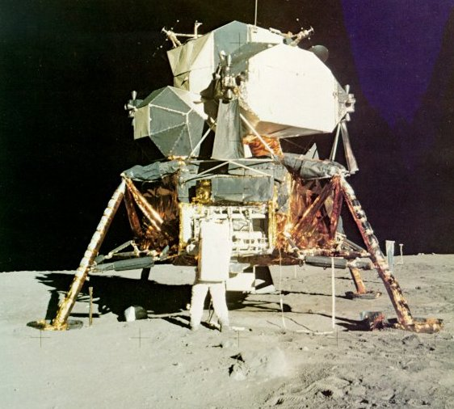
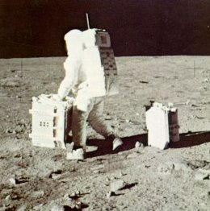
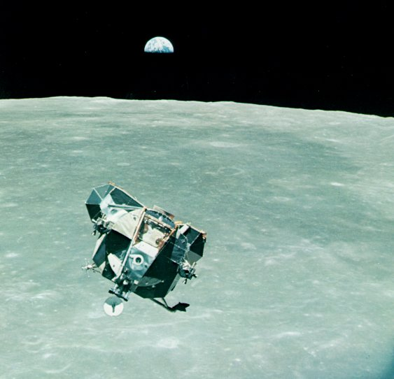

|  |
| Scientific experiments, stowed compactly for their trip to the Moon, are unpacked for deployment by Aldrin. Note the spread-leg stability of the landed LM, its sturdy legs foil-wrapped for thermal insulation. Beyond the right leg can be seen the solar-wind experiment, an exposed foil sheet that will be brought back to Earth for careful analysis; and beyond it the television camera. |
|  | Aldrin drops off the retroreflector for laser ranging of the Earth-Moon distance, and takes the seismometer experiment 15 feet farther out. The former gave new accuracy to measurement of the Moon's orbit. The seismometer was the first of an array of seismic stations now emplaced on the Moon. |
|  |
| Ghosting up to its crucial rendezvous with Columbia, its legs and landing stage left behind on the surface as a launching platform, Eagle's historic voyage is almost done. Once its film, rock boxes, and two exhilarated astronauts have come aboard, Eagle will be left in lunar orbit while the three men set out for the distant half-planet shown here that is man's home. |